2024-2025 Field Season Progress
Looking for the 2023-2024 Field Season Progress Page? CLICK HERE!
Content on this page is listed from newest to oldest. To start at the beginning of the field season, scroll to the bottom of the page.
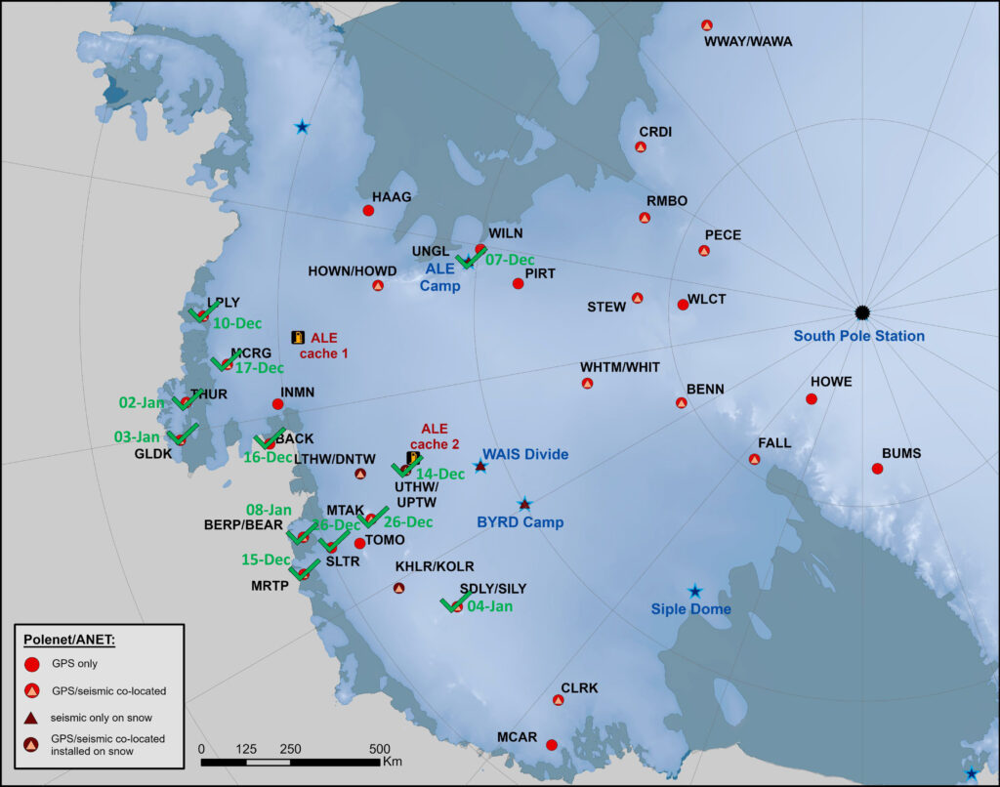
The above map shows site visits completed during the ANET-POLENET 2024-2025 field season. Dates indicate the day of the site visit. A special thanks to ALE (Antarctic Logistics & Expeditions), the National Science Foundation (NSF), and the United States Antarctic Program (USAP) for making this field season possible.
Updates From the Field #24: Punta!
9 January 2025, Punta Arenas, West Antarctica
Taking one final flight off-continent, the team departs Antarctica and lands in Punta Aeneas. From there, commercial flights will transport team members to their final destinations. The 2024-2025 ANET-POLENET field season is officially over. Kudos to the entire field team, and a special thanks to ALE camp staff and the KBA pilots and crew for always going above and beyond. The dedication and support of these amazing individuals makes ANET-POLENET science possible - thank you!
Text sent from lead-PI Terry Wilson:
Low cloud and snow was forecast for our scheduled departure day. The Punta team started preparation at 2 a.m. to allow the Icelandair 757 to take off at 6 a.m. – it reached Union Glacier, offloaded new clients and onloaded the large outgoing group just in time to leave before the bad weather arrived! Back in Punta Arenas, we celebrated our last day as a team….
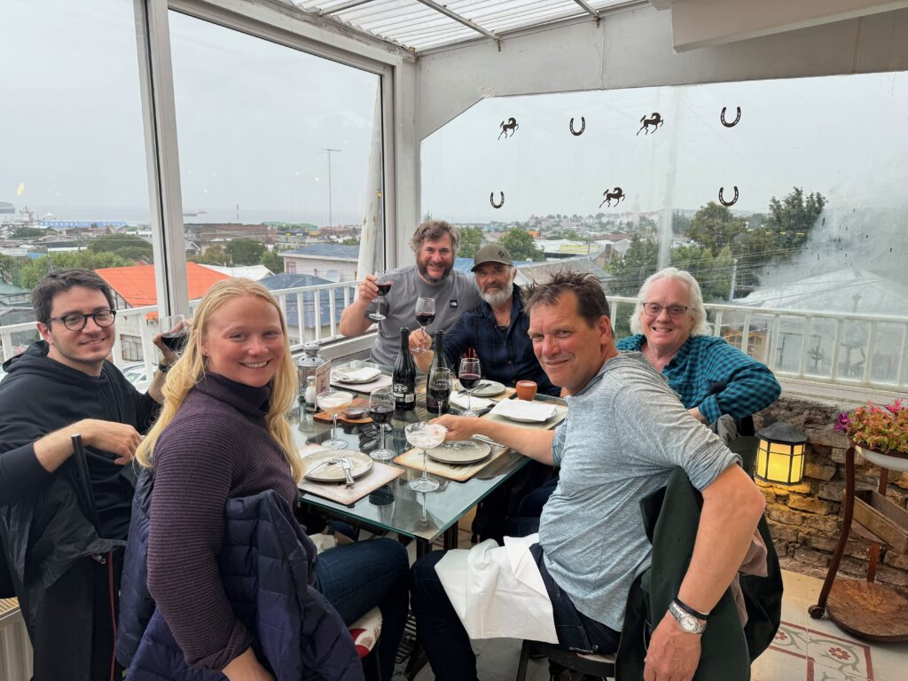
Above, the team enjoys one final meal together. Well done everyone!
Updates From the Field #23: Closing Time
9 January 2025, Union Glacier Camp, West Antarctica
With the field season work complete, the team switches gears and starts packing up.
Text sent from lead-PI Terry Wilson:
After 5 weeks at Union Glacier, we completed our site servicing for the season only 2 days before our scheduled departure. The team turned to the big task at the end of the field season - packing up all the equipment for shipping off the ice, first to Punta Arenas and then onward to the U.S.
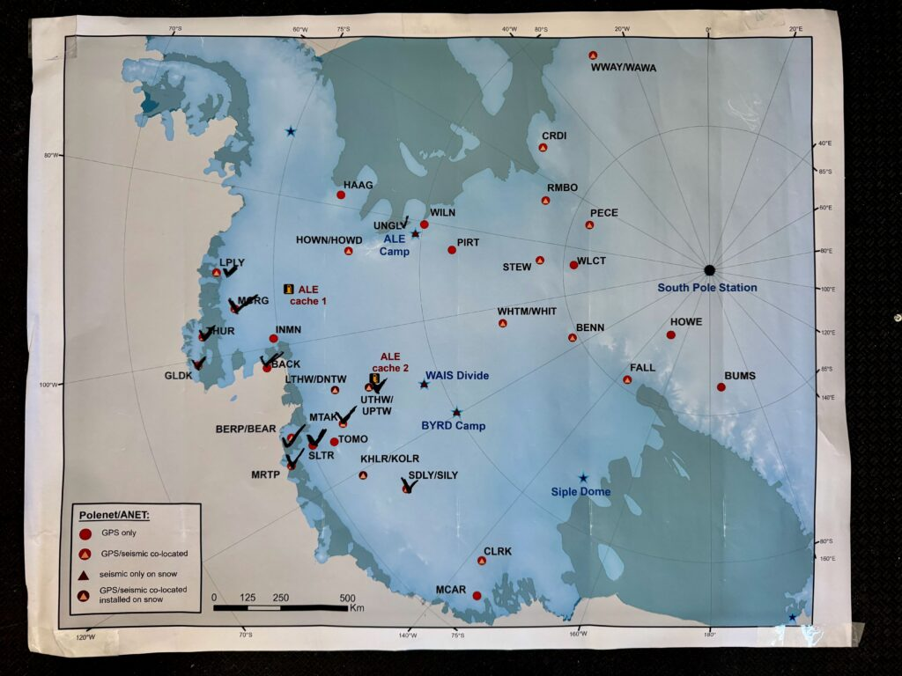
Mission accomplished! Above, the team marked every successful site visit by ticking off the site on a wall map in the science tent.
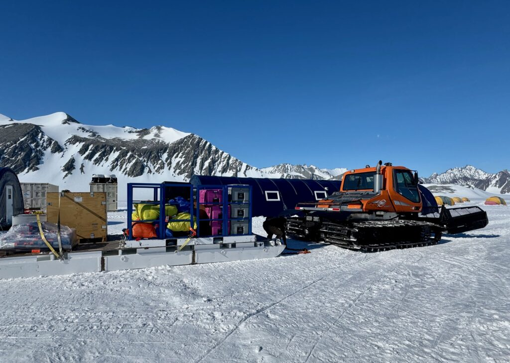
Above, the first load of cargo equipment is prepped and ready for transport to the ice runway for pick up by the ILYUSHIN IL-76 cargo plane used by ALE.
Updates From the Field #22: Job Well Done
8 January 2025, Bear Peninsula, West Antarctica
Finishing strong, the team completes one final mission to Bear Peninsula (BERP/BEAR), marking the end to a successful field season.
Text sent from lead-PI Terry Wilson:
The team continued to check the weather in hopes of reaching our last planned site for the season. With weather clearing at the coast, we headed to Bear Peninsula . As always, refueling was required at our remaining ‘Cache 2’ en route. We arrived at the site to find clear skies but 35 knot winds and ground blizzard! We elected to leave the operational GNSS site ‘as is’ rather than risk snow or damage by opening the system. At the seismic site we grabbed the data, swapped in a new baler and repaired the solar system. Arriving back at UG camp, the team celebrated completion of all our missions with a very late dinner and a spot of champagne……
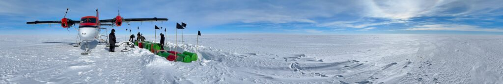
Above, the team stops at cache 2 to refuel. The epitome of the ‘flat white’ of the West Antarctic Ice Sheet!
Above, The crew built a sheltering snow wall while the team serviced the Bear Peninsula seismic station (BEAR) during a ground blizzard.
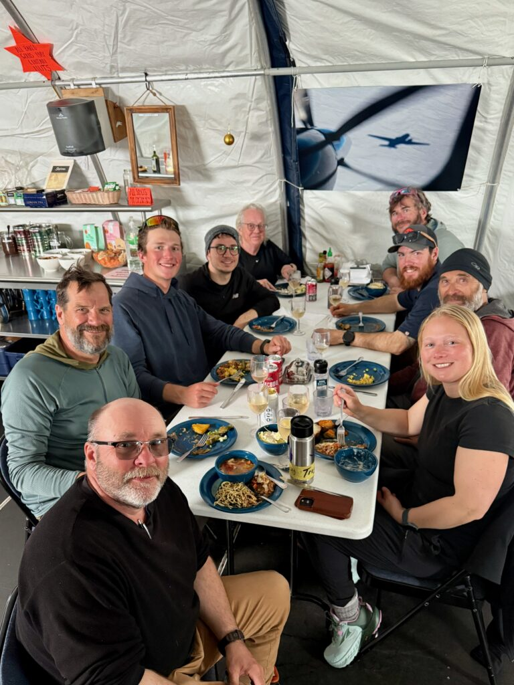
Above, starting in front and moving clockwise, KBA lead-pilot Troy Mckerral, science team member Jim Normandeau, KBA co-pilot Griffin Kelly, science team member Franco Sobrero, ANET-POLENET lead-PI Terry Wilson, science team member Nicolas Bayou, KBA mechanic Philip Pilon, mountaineer Mark Whetu, and science team member Erica Lucas enjoy a celebratory "last supper" after completing the final planned site visit to Bear Peninsula.
Updates From the Field #21: Going The Extra Mile
4 January 2025, Mount Sidley, West Antarctica
Flying for the third day in a row, the team was able to make it to Mount Sidley, one of the highest priority sites of the field season. Successfully negotiating a myriad of challenges including a monumental 18-mile taxi, the entire team put in maximum effort to collect 7 years of precious seismic data. A special thanks to ALE camp staff and the KBA crew for their flexibility and always going the extra mile - literally! Without their support, achieving science goals at challenging sites like Mount Sidley would not be possible.
Text sent from lead-PI Terry Wilson:
Our Mount Sidley site sits on the flank of this large glaciated volcano and is the most distant site we expected to reach this year. Upon arrival the team found relatively low visibility conditions and had to land quite a distance from our instrument sites. It was then necessary for the Twin Otter to make an epic taxi [~2 hours!] up from the landing site. The solar panels were shattered at the sites , but we were able to replace some of them. Salvaging the seismic storage drive from this site, last serviced in the 2017-18 season, retrieved 7 years of stored data – a huge success for the team and for the project science! Limited time and payload prevented us from removing the seismic system from the site.
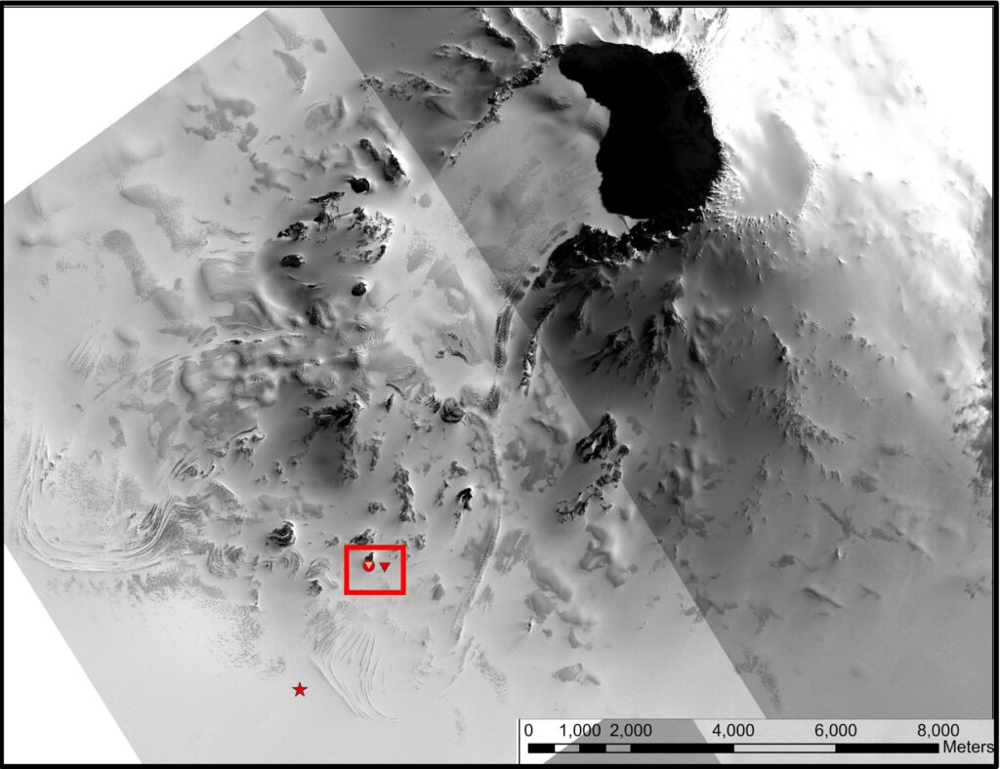
Above, a satellite image shows the distance from where the plane landed (star) to the GNSS (SDLY) and seismic (SILY) sites at Mount Sidley (inside red box).
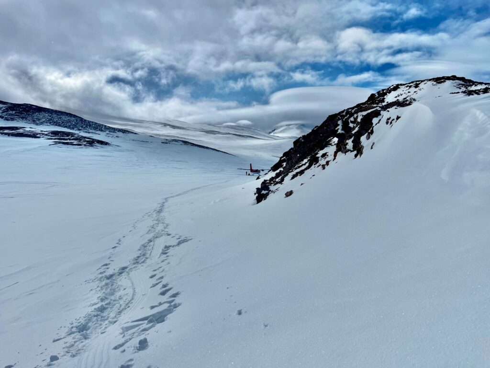
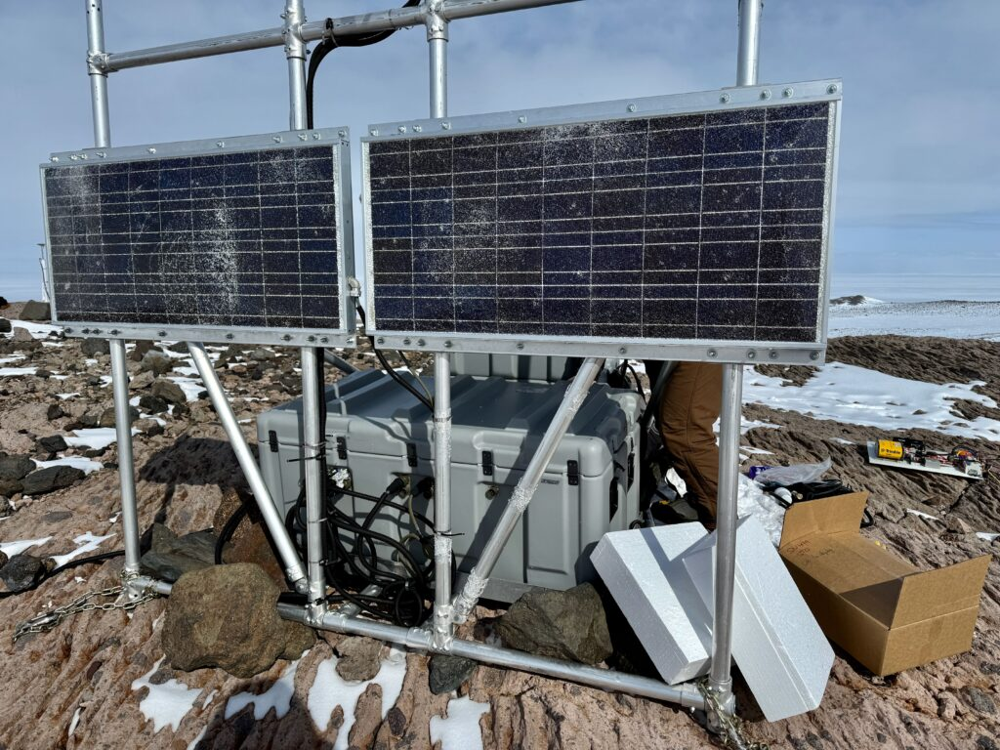
Above, solar panels at Mount Sidley (SDLY) are shattered due to impacts from wind-blown rocks. Photo credit: Franco Sobrero.
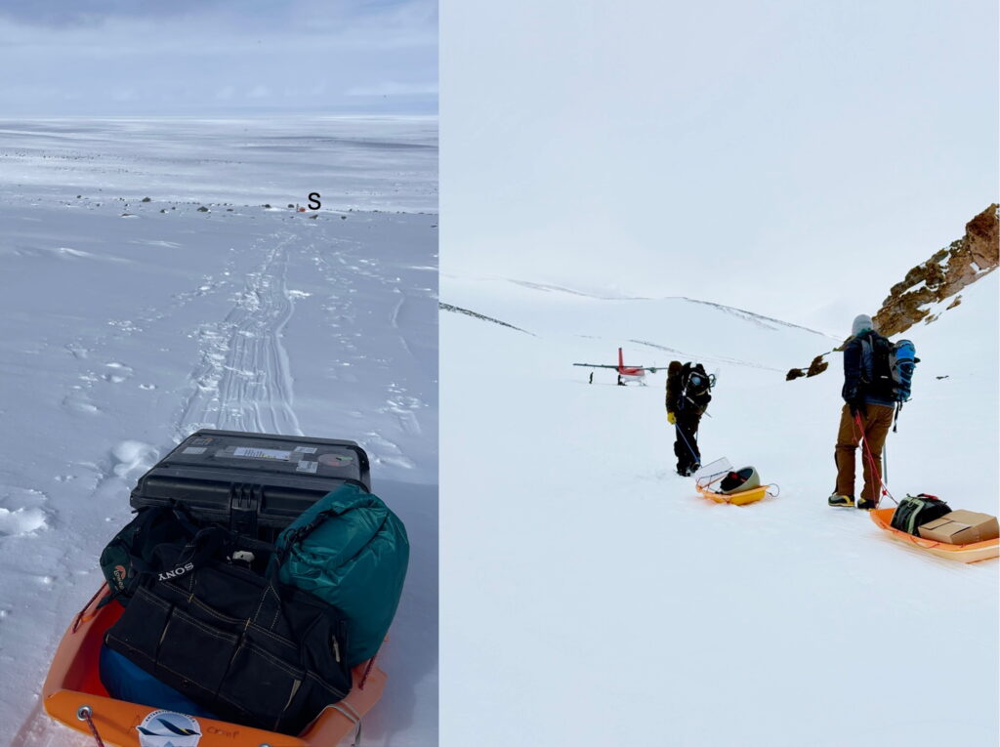
Above left, the team hauls gear away from the seismic site (denoted by the "S"). Above right, the team pulls sleds full of gear back to the plane after completing work at Mount Sidley (SDLY/SILY). Photo credits: Jim Normandeau and Franco Sobrero.
Updates From the Field #20: Second Time's A Charm
3 January 2025, Gould Knoll, West Antarctica
For the second day in a row the team took off for Gould Knoll, only this time weather permitting landing at the site. Despite some unexpected challenges, both the seismic and GNSS sites were serviced and are now collecting data again.
Text sent from lead-PI Terry Wilson:
‘Take 2’ to service our Gould Knoll site on Thurston Island. Weather was kinder fortunately. The seismic system – replaced just last year – was already substantially buried from high snow accumulation. The seismic team successfully replaced the seismic sensor, needed because it had stopped delivering quality data. Unfortunately, we found a second case of damage to the GPS enclosure due to an explosion, apparently when the wind charge controller failed. We were not expecting this situation, so did our best to ‘jury rig’ the broken enclosure. Hopefully the internal enclosures around the receiver and electronic components will allow the system to continue to collect data through the coming year.
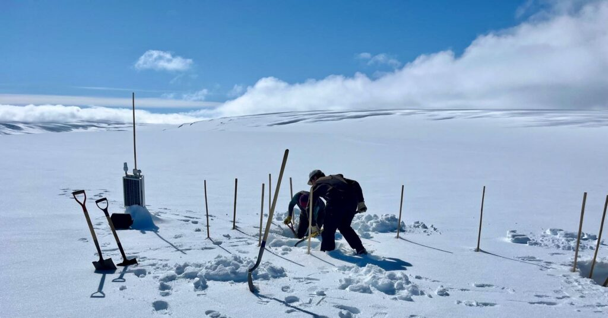
Above, the buried seismic site at Gould Knoll (GLDK). Photo credit: Troy Mckerral
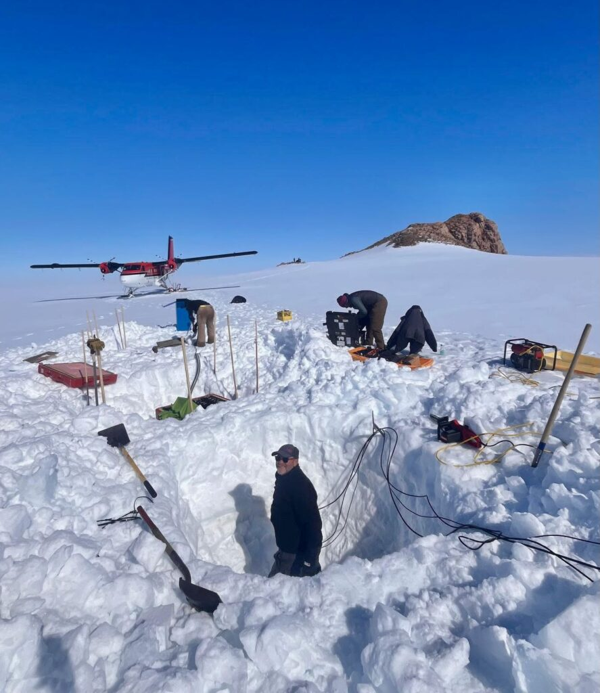
Above, the team digs up the seismic site at Gould Knoll (GLDK). Photo credit: Troy Mckerral
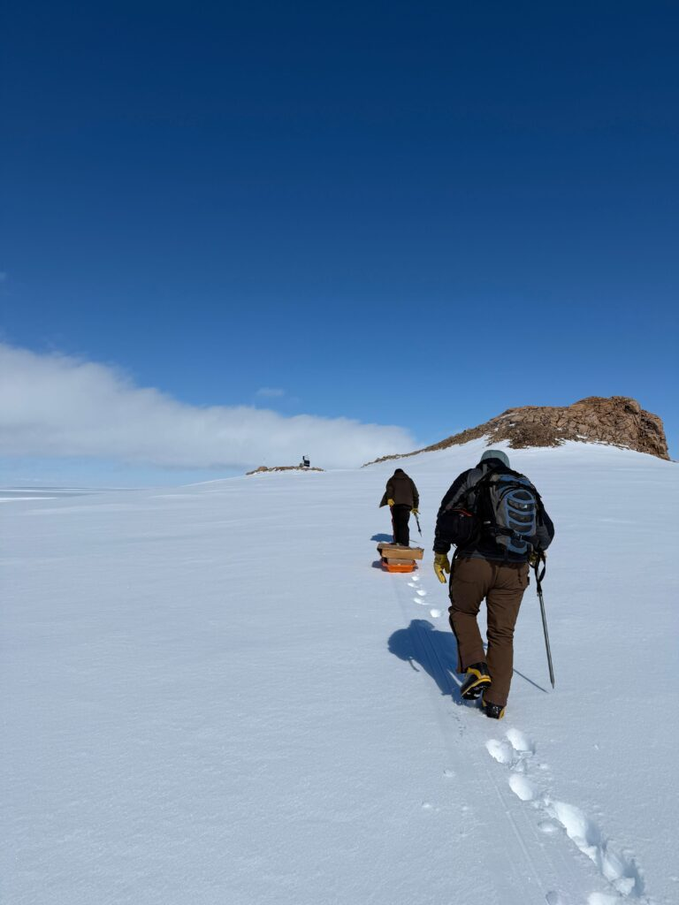
Above, the team hauls gear to the GNSS site at Gould Knoll (GLDK). Photo credit: Franco Sobrero.
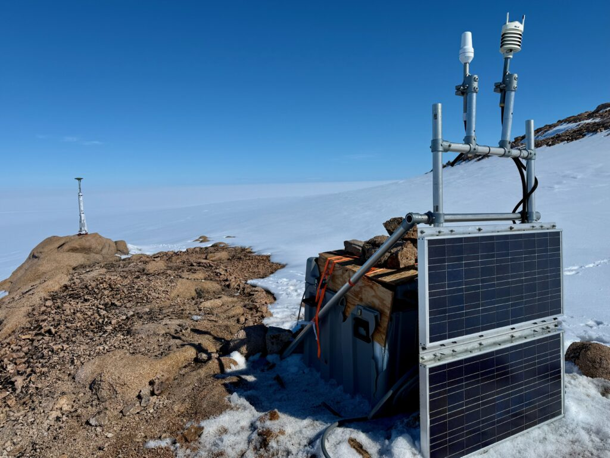
Above, the GNSS site at Gould Knoll (GLDK) after servicing, including some plywood repairs to remedy the damaged enclosure. Photo credit: Franco Sobrero.
Updates From the Field #19: Pinch Hitter
2 January 2025, Thurston Island, West Antarctica
Starting off the year strong, weather conditions enabled the team to start flying again. While the initial goal was servicing the seismic and GNSS sites at Gould Knoll, poor visibility prevented the plane from landing. The team opted to substitute in a visit to nearby Thurston Island instead. This pinch hitter move resulted in a successful servicing of both the seismic and GNSS sites.
Text sent from lead-PI Terry Wilson:
After another 5 days of cancellation due to weather and 1 crew rest day, the team was able to head for Thurston Island, on the coast of West Antarctic to the east of the Amundsen Embayment. The target was our site at Gould Knoll but the visibility was too poor to land there, so we diverted to our other Thurston Island site . Conditions were damp with melt puddles, and there were many ice layers in the snow making the dig out harder, but fortunately the seismic site was not buried. Both GPS and seismic systems were successfully serviced.
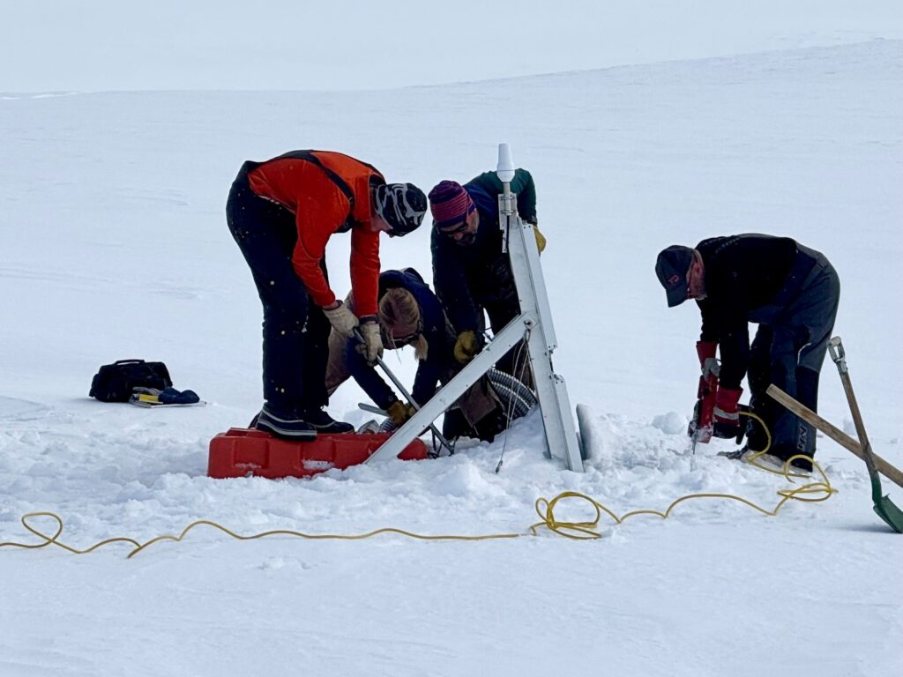
Above, the team cuts through ice to reach the seismic equipment at site THUR (Thurstan Island). Photo credit: Franco Sobrero.
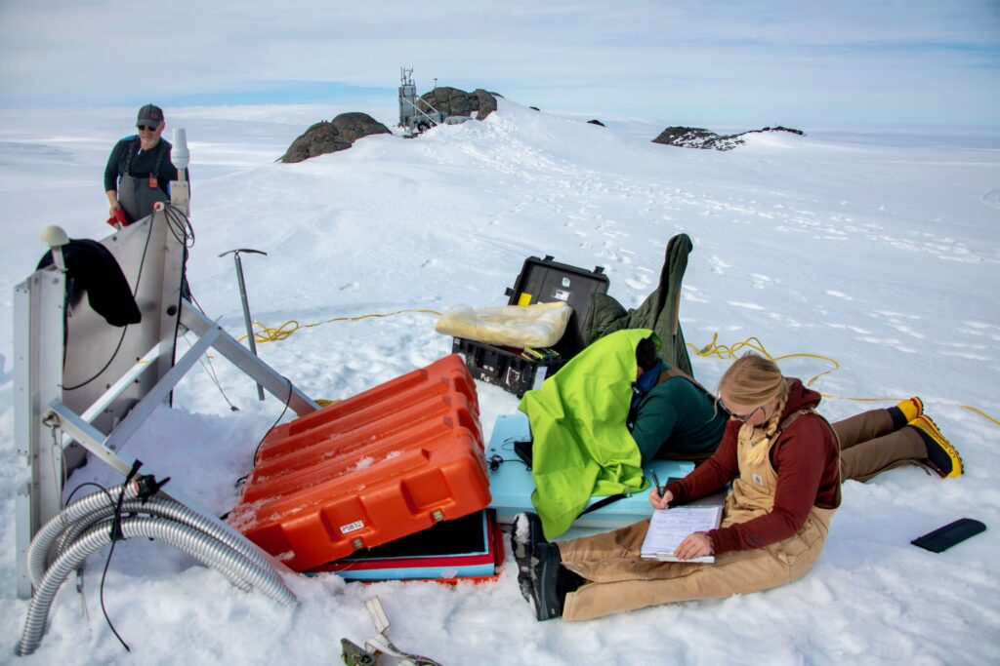
Above, the team services the seismic site at Thurstan Island (THUR). Photo credit: Nicolas Bayou.
Updates From the Field #18: Happy New Year!
1 January 2025, Union Glacier Camp, West Antarctica
Despite just 1 'fly day' out of the past 15 days, the team remains in good spirits and enjoyed the New Year's Eve celebrations. The KBA crew took advantage of the frosty landscape by building a hangout space to bring in the new year with style. Meanwhile, forecasts for the coming days suggest the possibility for promising weather, so the team is hoping to get back to science field work soon.
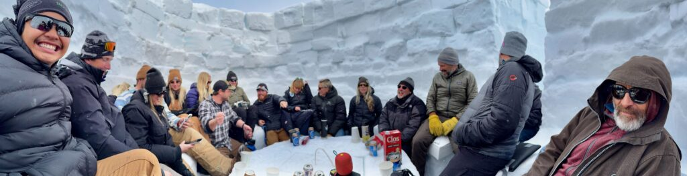
Above, the frozen hangout space built by the KBA crew. Text sent from lead-PI Terry Wilson: KBA made an 'ice dugout' , which had a carved out central table with a 'cooler bin' in the middle, and bench seats complete with armrests and cup holders.
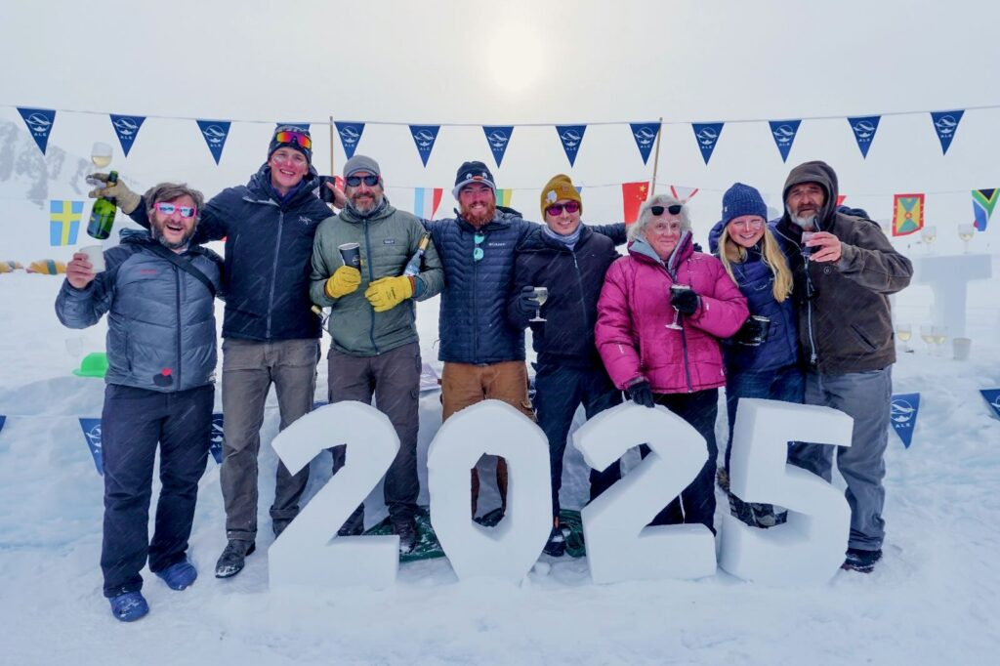
Above, the team brings in the new year. From left to right, science team member Nicolas Bayou, KBA co-pilot Griffin Kelly, science team member Jim Normandeau, KBA mechanic Philip Pilon, science team member Franco Sobrero, ANET-POLENET lead-PI Terry Wilson, science team member Erica Lucas, and mountaineer Mark Whetu bring in the new year. (Not pictured, KBA lead-pilot Troy Mckerral)
Updates From the Field #17: Groundhog Day
30 December 2024, Union Glacier Camp, West Antarctica
Following a single day of flying on 26 December, flight cancellations continue, and the team is once again reliving the same day over and over again.
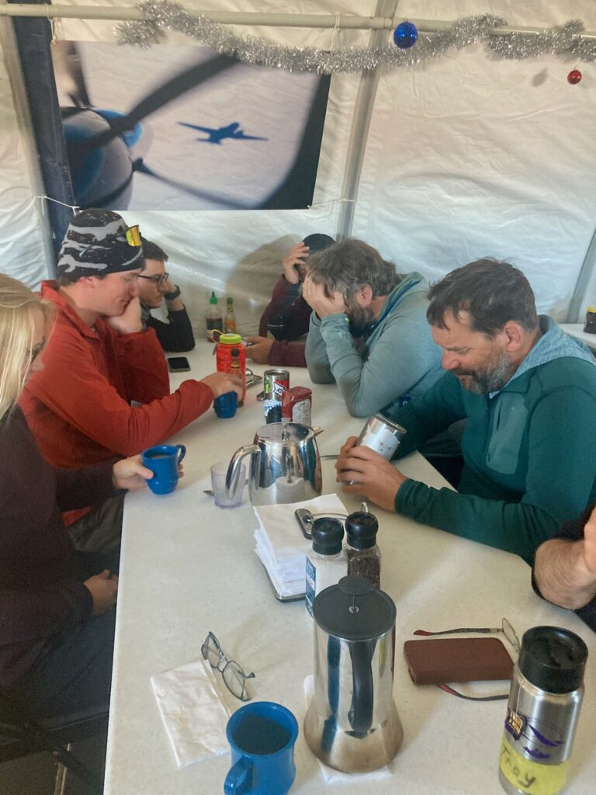
Above, the team channels Bill Murray while struggling to face another no-fly day. Unfortunately, no amount of movie magic can turn the current string of bad weather to the team's advantage.
Updates From the Field #16: Double Header
26 December 2024, Mount Takahe and Slater Rocks, West Antarctica
The team was able to break the no-fly streak with a double header, visiting sites at both Mount Takahe (MTAK) and Slater Rocks (SLTR) in the same day. Despite strong winds resulting in blizzard conditions and complications from unexpected equipment errors, the team serviced all systems.
Text sent from lead-PI Terry Wilson:
Finally we had a ‘flyable’ day! After so many camp days, everyone was eager to get back to work. It turned out that the partial clearing of the skies was linked with a *lot* of wind, and we were greeted by ‘ground blizzards’ with snow blowing sideways for several feet above the ground. Nevertheless, we were able to service the GNSS site at Slater Rocks, which had not been tracking satellites – we replaced the antenna, the cable connecting it to the receiver, and the receiver. We decided to try for a second site and flew to Mt Takahe, where a brief lull on arrival turned into an even stronger ground blizzard. Both the seismic and GNSS sites were serviced and data retrieved – we had errors from the GNSS receiver on site, but Nikko was able to reset it remotely, so we have fingers crossed that it is working properly.
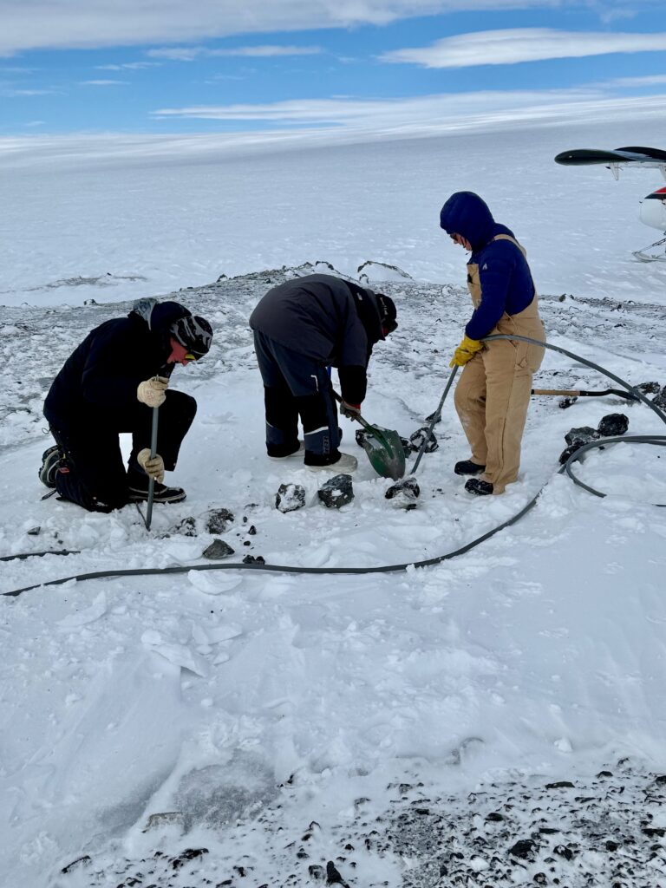
Above, the team digs up a cable at the GNSS/GPS site at Slater Rocks (SLTR).
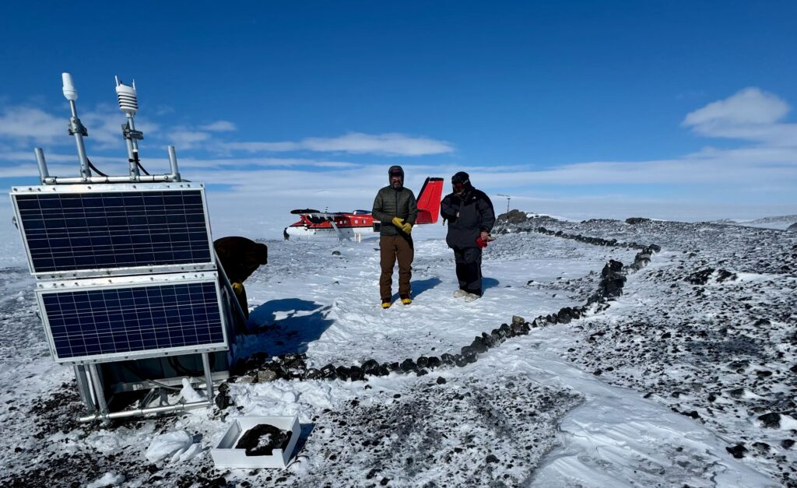
Above, the newly replaced cable for the GNSS/GPS site at Slater Rocks (SLTR) is covered with rocks to help protect it from environmental conditions.
The above video shows the ground blizzard conditions at the Slater Rocks GNSS/GPS site (SLTR). Video credit: Erica Lucas.
Above, the team services the GNSS/GPS site at Slater Rocks (SLTR).
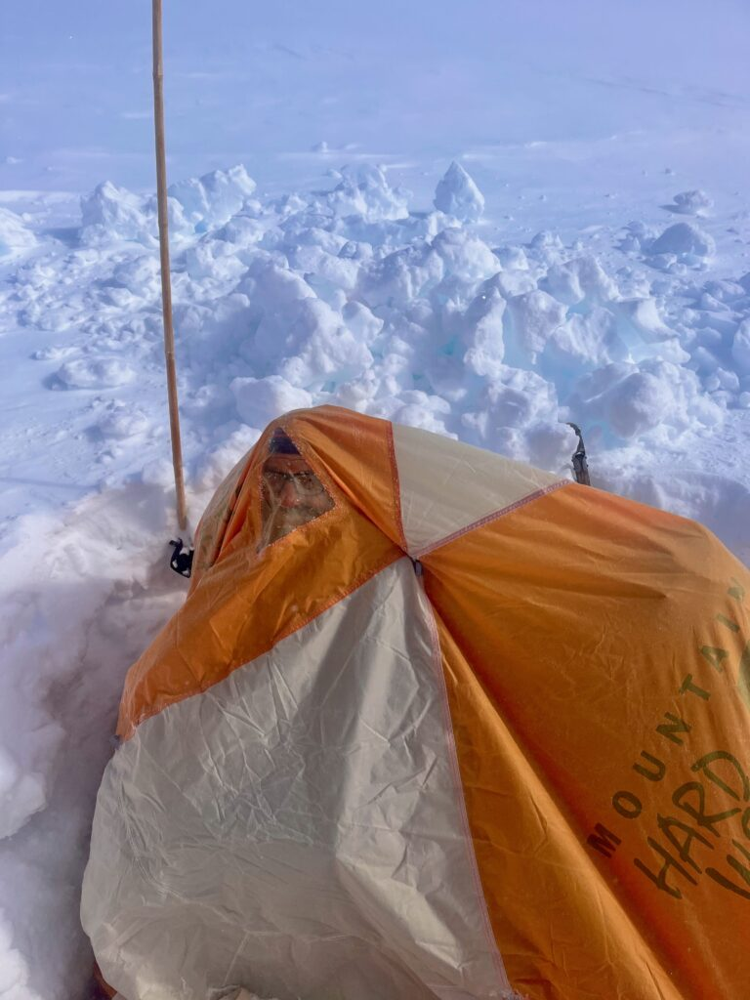
Above, while servicing the seismic system at Mt Takahe (MTAK), science team member Jim Normandeau works from inside a tent to avoid blowing snow. Photo credit: Griffin Kelly.
Above, the GNSS/GPS antenna and monument are shown during a ground blizzard at Mt Takahe (MTAK).
Above, science team member works on servicing the GNSS/GPS site at Mt Takahe (MTAK). Video credit: Mark Whetu.
Updates From the Field #15: Happy Holidays!
25 December 2024, Union Glacier Camp, West Antarctica
After the long span of unflyable weather, holiday festivities are a welcome change of pace. ALE is known for putting together a fantastic array of celebratory events, making sure everyone has a special holiday experience, even at the bottom of the world.
Text sent from lead-PI Terry Wilson:
Although we have been limited to camp due to bad weather at our remote sites, weather has been sunny and warm at Union Glacier. It is a relaxed time for ALE staff because most clients have left or are out at satellite camps. We were well represented in the annual ALE Camp vs Chilean Union Glacier Base by Erica and Griffin. There were outings for hiking, skiing and ice climbing, some holiday decorating, impressive entries to the camp ‘film festival’, an incredible ‘No Talent Show’, and a few dance parties thrown in. Christmas dinner was a great meal, followed by the ‘Secret Santa’ gift exchange and much shared holiday cheer!
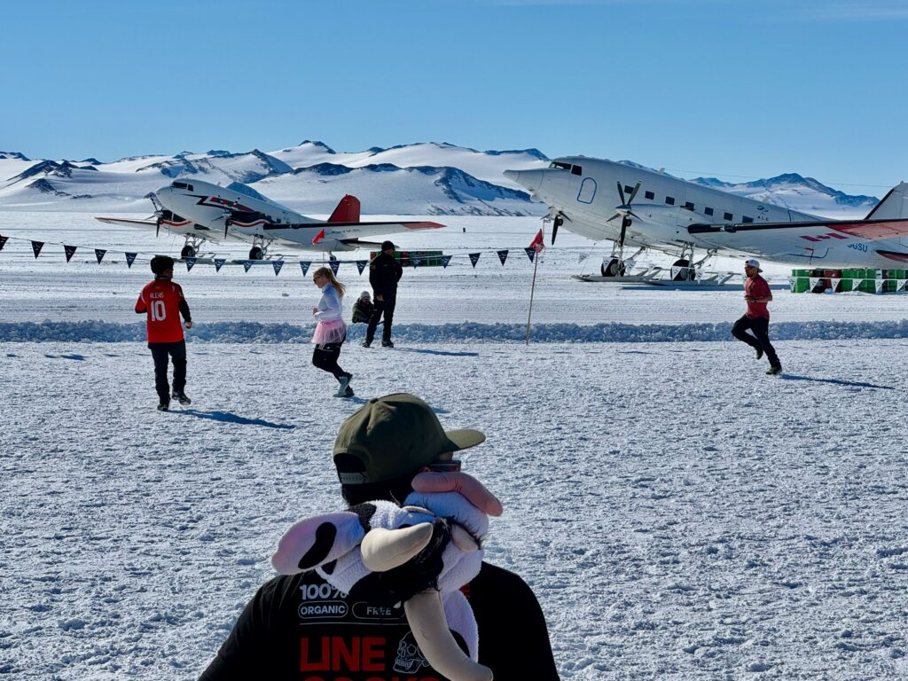
Above, science team member Erica Lucas sports a pink tutu while participating in the holiday soccer game.
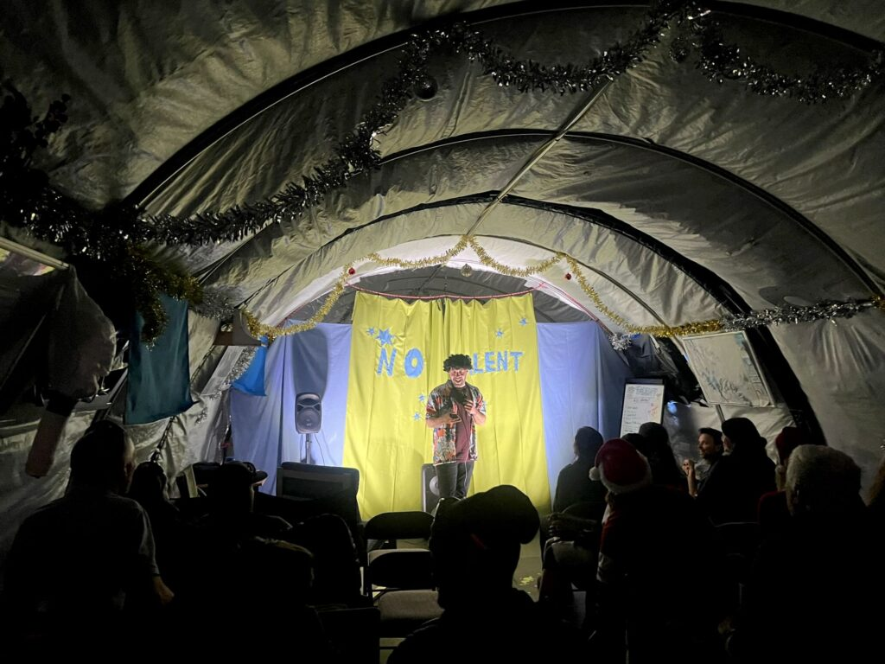
Above, the master of ceremonies for the holiday "No Talent" show address the audience.
Above, the team submission for the ALE film festival won the prize for 'most creative film'!
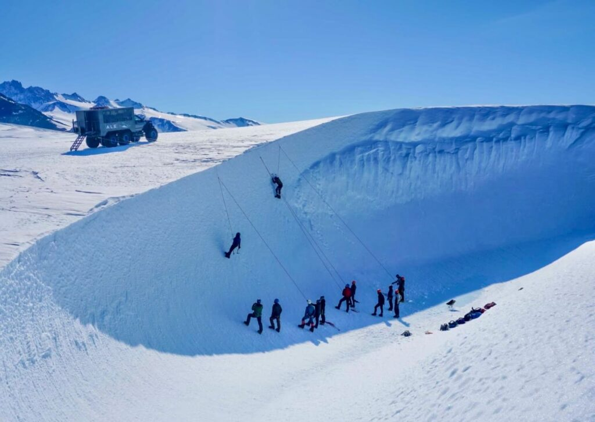
Above, the team participates with other members of camp in an ice climbing excursion offered by ALE as a holiday activity. Photo credit: Franco Sobrero.
Above from left to right, science team member Franco Sobrero, lead-PI Terry Wilson, ALE kitchen staff member Keila, and KBA lead-pilot Troy Mckerral take a selfie during the holiday festivities.
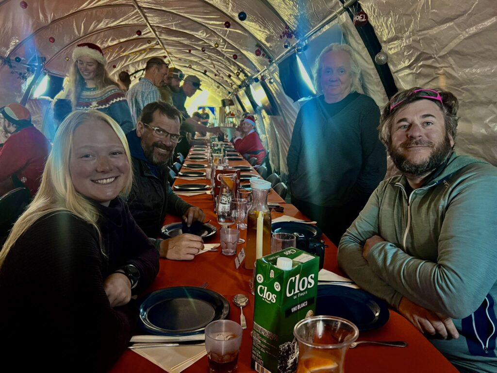
Above from left to right, science team members Erica Lucas, Jim Normandeau, Terry Wilson, and Nicolas Bayou gather for the holiday meal.
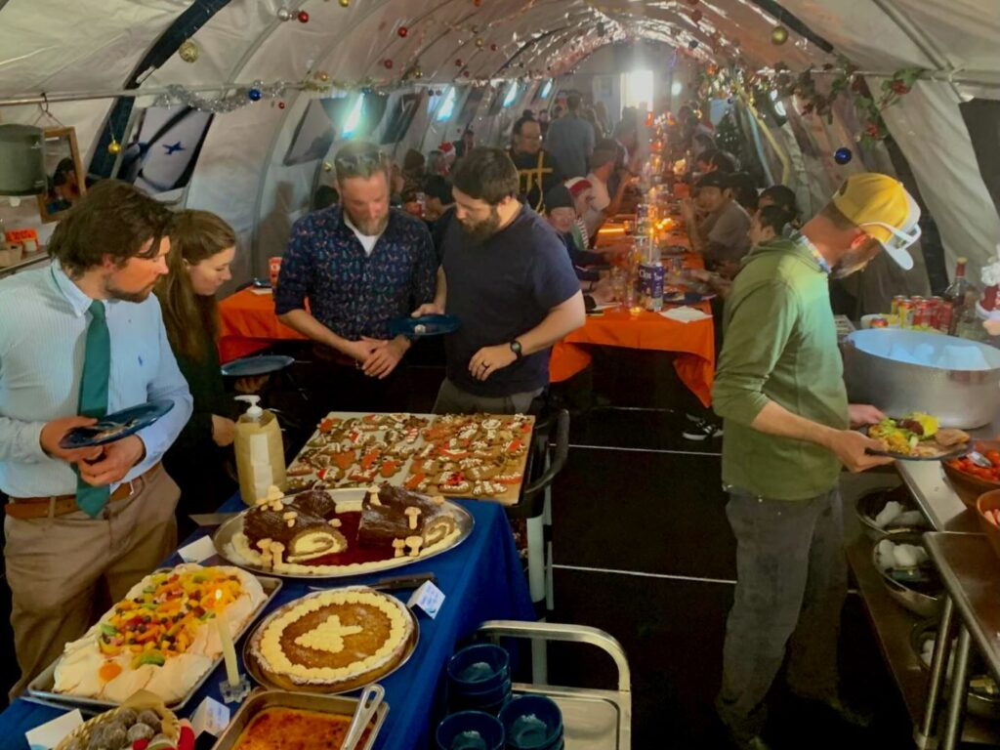
Above, ALE camp residents enjoy Christmas dinner. ALE camp food is always top notch, but the holidays are a particularly impressive event where the kitchen staff go above and beyond to provide an amazing spread of festive foods. Photo credit: Mark Whetu.
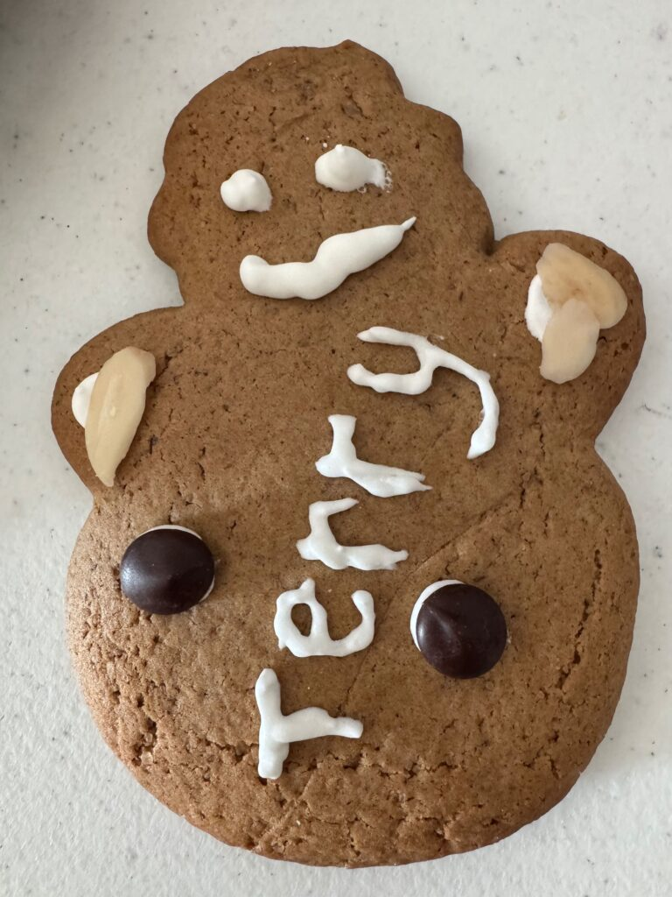
Above, lead-PI Terry Wilson's personalized ALE Christmas cookie is quickly becoming an annual tradition!
Updates From the Field #14: Breaking All The Wrong Records
22-24 December 2024, Union Glacier Camp, West Antarctica
The team continues to struggle with the one variable they have no control over - weather.
Text sent from lead-PI Terry Wilson:
We have set a record that we definitely did not want – the longest time without being able to fly from Union Glacier. After 2 days of mandatory rest for the Twin Otter pilots, we had 5 days in a row with poor weather at all our remote sites and had to cancel our work. The ALE camp had a well-deserved holiday on Christmas day, another ‘no fly’ day for us. A series of monster low pressure systems continue to come on to the continent in the Thurston Island region and advance over nearly all of West Antarctica. We are ready for a big change in the weather pattern!
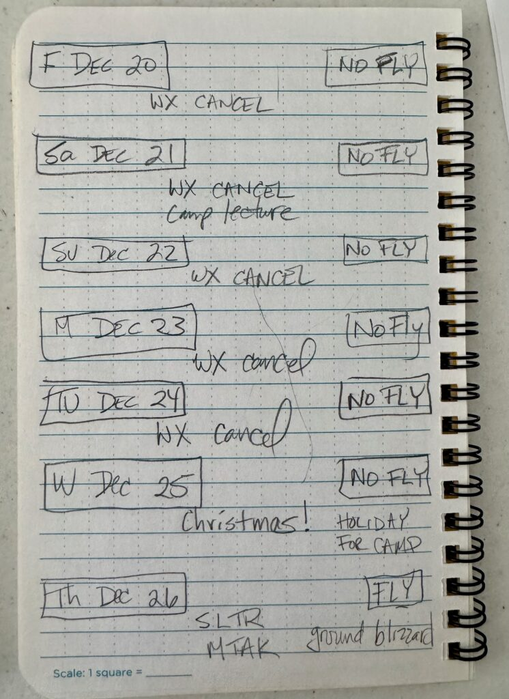
Above, the notebook kept by lead-PI Terry Wilson shows the long string of no-fly days due to weather (WX) cancellations.
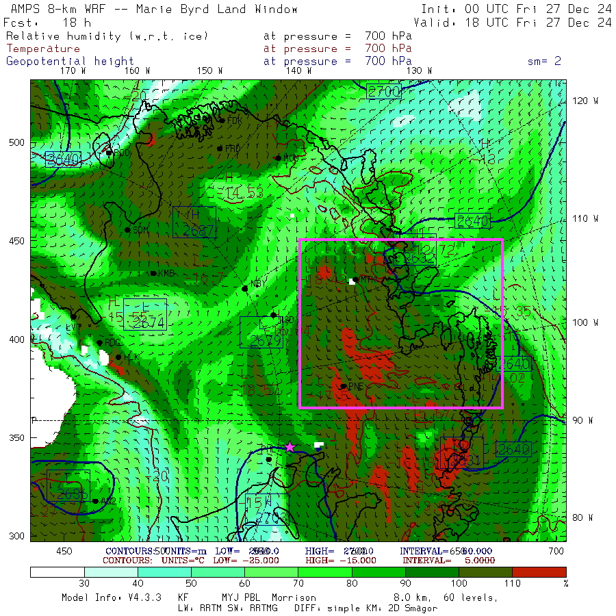
A continental weather model is shown above. While red and green can be festive, in this case they are a sad sight for the field team. Green is 'moisture' (relative humidity) and indicates cloudy conditions are likely, making flying unsafe.
Updates From the Field #12: Broader Impacts
21 December 2024, Union Glacier Camp, West Antarctica
Terry Wilson, lead-PI of the ANET-POLENET project, utilized the break in flying as an opportunity to further Broader Impacts, which is an important component of all NSF-sponsored projects. Taking advantage of a diverse and captive audience, Terry presented a science lecture to ALE Union Glacier Camp residents. Despite the unflyable conditions, camp remains a lively hub of activities, and everyone is in good spirits gearing up for the holidays.
Text sent from lead-PI Terry Wilson:
Most of the 'clients' are gone from camp , and the staff is quite relaxed. Activities for the holiday period have started up. Everyone but me went ice climbing the day before yesterday and there may be other outing options. This afternoon is Chile Base vs. ALE soccer match. Tomorrow night is 'film festival', each 'department' was tasked with making a short video. We have a good one about digging through to the bottom of the earth .
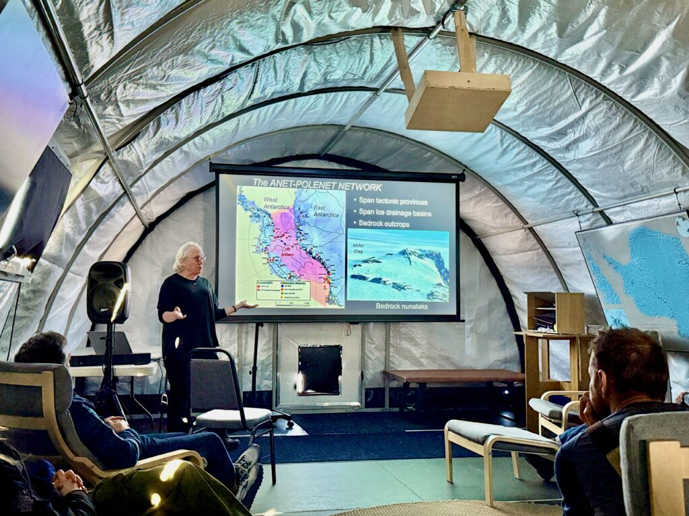
Above, lead-PI Terry Wilson presents a science lecture at ALE Union Glacier Camp. Photo credit: Franco Sobrero.
Updates From the Field #11: Weather Dictatorship
20, 21, & ??? December 2024, Union Glacier Camp, West Antarctica
A series of no-fly days due to unfavorable flight conditions serves as a reminder that in Antarctica, weather has absolute authority.
Text sent from lead-PI Terry Wilson:
Although weather is warm and sky is blue at Union Glacier Camp, there is a large low pressure system just offshore of the West Antarctic coastline which is pushing moisture/clouds onshore. This December 21st false-color satellite image shows the persistent pattern that we are stuck in at the moment: very low cloud , intermediate level cloud above it, and high cloud all cover much of West Antarctica. Blue color indicates the highest level clouds - you can see all 4 cloud levels over our West Antarctic Fuel Cache 2, labeled WAFC2 on the image. Although sites such as BEAR, SLTR and MTAK have patchier cloud and some clear areas , the linear streaks in the cloud cover indicate high winds. Unfortunately this pattern is forecast to remain for the next few days……
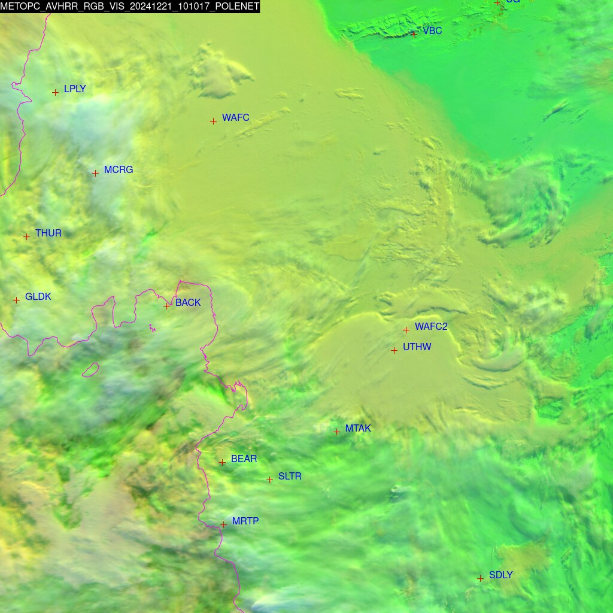
Above, a satellite image from 21 December 2024. The description above the image explains the graphic in detail. Images like this are used by the ALE meteorologists, who maximize flight opportunities by checking weather multiple times a day.
Updates From the Field #10: Crew Rest Day, The Team Will Play
18-19 December 2024, Union Glacier Camp, West Antarctica
After the flurry of activity, the team takes a 2-day break for crew rest. These mandatory rest days are based on both weekly and monthly flight hours and are important for maintaining safety. These breaks also give the team and opportunity to refresh, relax, and socialize. In some cases, a picture is worth a thousand words!
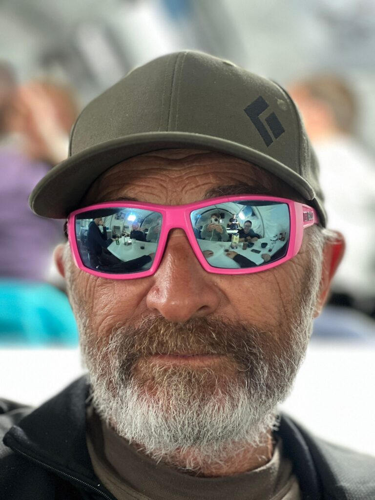
Mountaineer Mark Whetu
ANET-POLENET Lead-PI Terry Wilson
Science team member Nicolas Bayou
Science team member Franco Sobrero
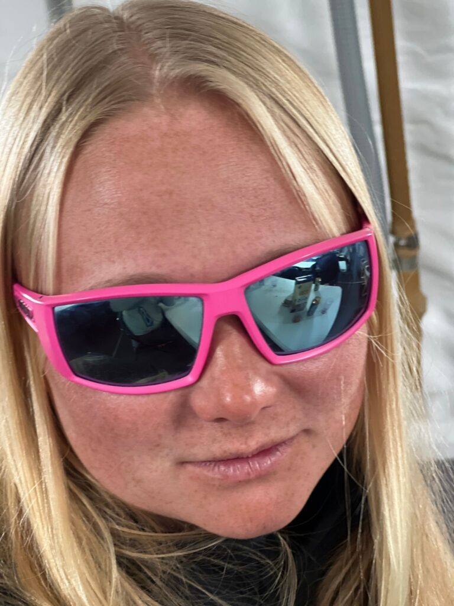
Science team member Erica Lucas.
Science team member Jim Normandeau
Updates From the Field #9: Skuas & Fires & Explosions, Oh My!
17 December 2024, Miller Crag, West Antarctica
Continuing the streak of productivity, the team successfully serviced both the seismic and GNSS/GPS sites at Miller Crag (MCRG). Despite some unexpected challenges, the team was able to leave both stations in good condition and fully operational.
Text sent from lead-PI Terry Wilson:
Wow, 5 flight days in a row! We flew to the site at Miller Crag to service the seismic system and repair the damage to the GNSS system. For once the seismic enclosure and solar panels were not deeply buried and the work went quickly. The GNSS system had suffered an explosion that had broken the enclosure open and caused a small fire inside. Amazingly, the Resolute receiver was still recording good data!! Thanks to some good problem solving by the team, we were able to replace the damaged enclosure with the seismic box retrieved from Upper Thwaites and just had to swap out the lid to retain the cable ports. Fortunately we had a skua to oversee our maintenance work!
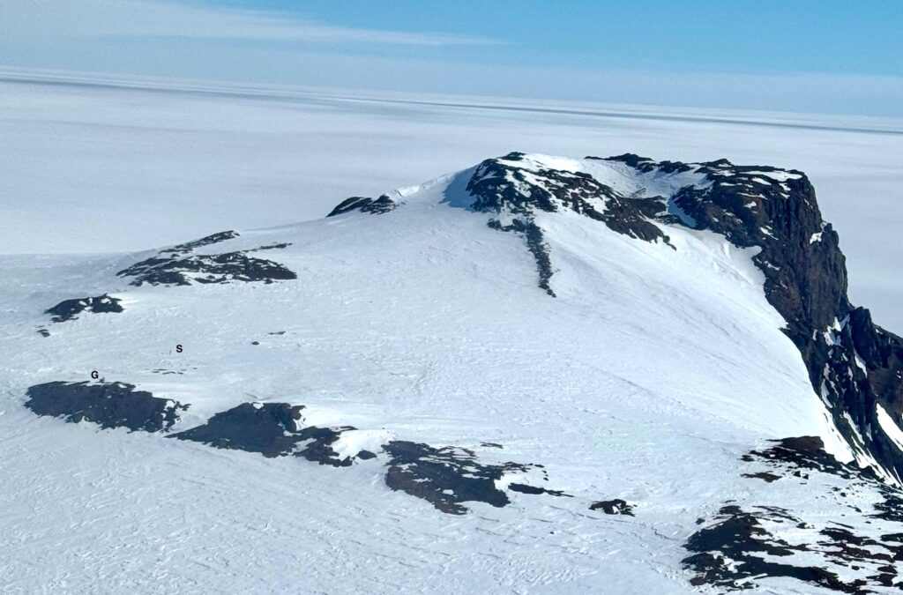
Above, the team hauls gear to the Millr Craig GNSS/GPS site (MCRG).
Above, the team digs out the Miller Crag seismic station (MCRG).
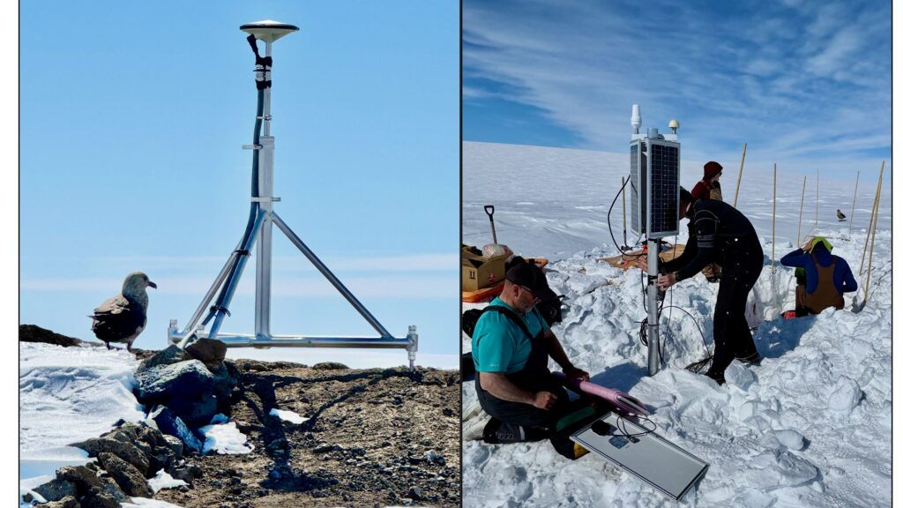
The above photos show the curious skua that kept watch over the team as they completed work on the systems at Miller Crag. A rare find for many of the ANET-POLENET stations, these fearless flyers are predatory seabirds found in the polar regions.
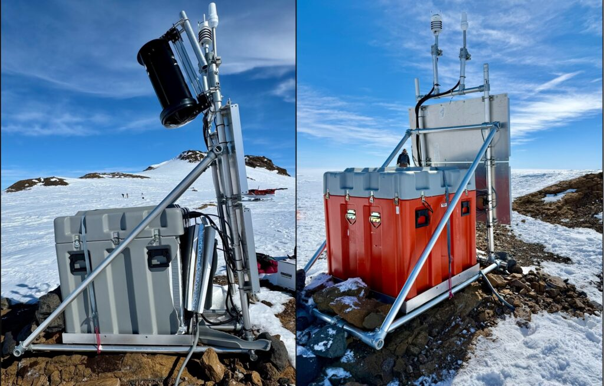
Above, the damaged (left) and repaired (right) GNSS/GPS site at Mille Crag (MCRG). The site is now in good condition and fully functional again thanks to some clever thinking by the team. Lead-pilot Troy Mckerral had the idea to repurpose the seismic enclosure from the Upper Thwaites seismic site decommissioned just days earlier, and science team members Nicolas Bayou and Jim Normandeau came up with the idea to keep the GNSS/GPS enclosure lid to preserve the necessary cable pass through ports.
Updates From the Field #8: Back(er) At It
16 December 2024, Backer Island, West Antarctica
The team completed a successful maintenance visit to the GNSS/GPS site at Backer Island (BACK). After a battery refresh the site is back at it and ready to collect data through the winter.
Text sent from lead-PI Terry Wilson:
The Backer Island GNSS site required new batteries – it did not have sufficient power from the old battery bank to collect data through the winter for the last several years. Thanks to our new Resolute receivers, we could discard the 22 original batteries and replace them with only 14 new gel cell batteries. The sky was overcast and the light was very flat, but there were still beautiful views of the frozen Pine Island Bay.
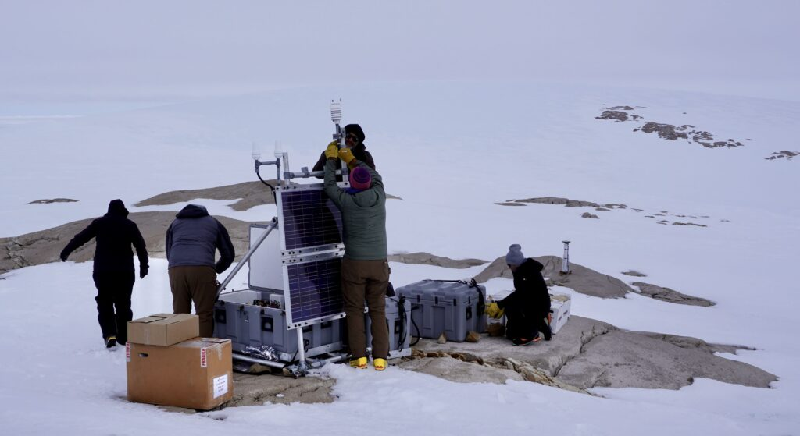
Above, the team services the GNSS/GPS site at Backer Island (BACK). Photo credit: Erica Lucas.
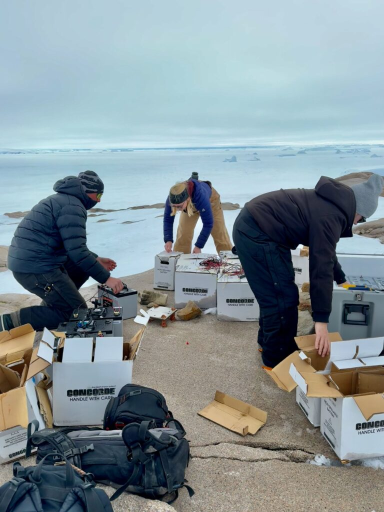
Above from left to right, KBA co-pilot Griffin Kelly, Erica Lucas, and Franco Sobrero prepare battery replacements for the GNSS/GPS site at Backer Island (BACK).
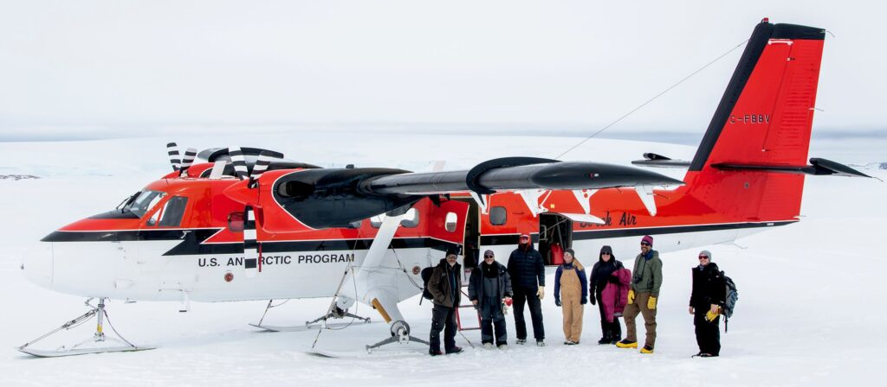
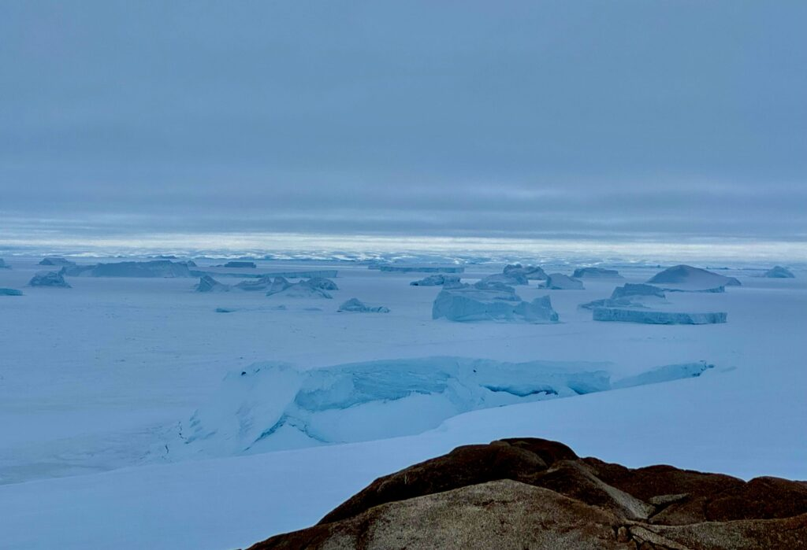
Above, the view of frozen Pine Island Bay from Backer Island, West Antarctica.
Updates From the Field #7: All Hands On Deck!
15 December 2024, Martin Peninsula, West Antarctica
Martin Peninsula, located along the coast of Marie Byrd Land, is home to both a seismic and GNSS/GPS site (MRTP). Despite the very long flight time required to reach the stations, the team was able to complete all necessary work to fully service these two systems. The short ground time demands an all-hands-on-deck approach.
Text sent from lead-PI Terry Wilson:
The full team made the very long flight to our MRTP site – this is one of the most distant sites from Union Glacier Camp. We flew 1100 nautical miles round trip which took ~8 hours of flying and 40 minutes to refuel at a cache each way. Out of a ~12.5 day, we had only 3.25 hours on the ground at our site to complete the maintenance work! The MRTP GNSS system needed only a receiver swap, but the seismic site required substantial digging – surprisingly, in only 1 year there was ~1.5 meters of accumulation. If another year had passed without a visit, it would have been fully buried .
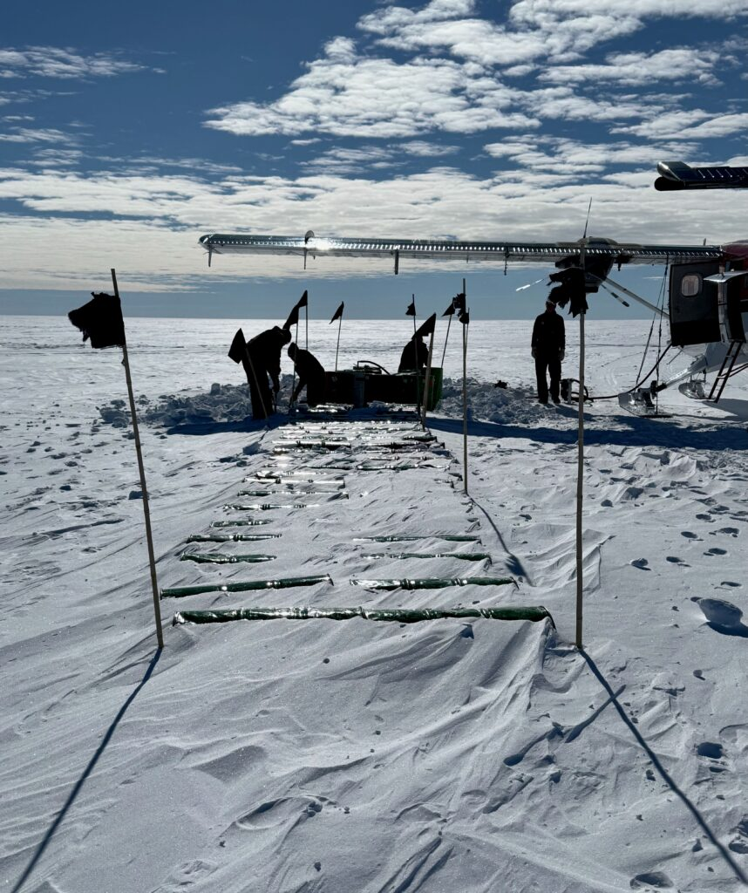
No snacks at this gas station! Above, the KBA crew fills up at a fuel cache during a flight to/from Martin Peninsula (MRTP). The horizontal objects reflecting sunlight between the flags are 55-gallon drums of jet fuel.
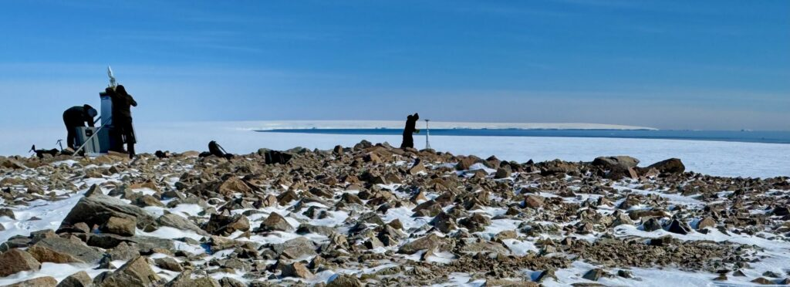
Above, the team services the GNSS/GPS site at Martin Peninsula (MRTP).
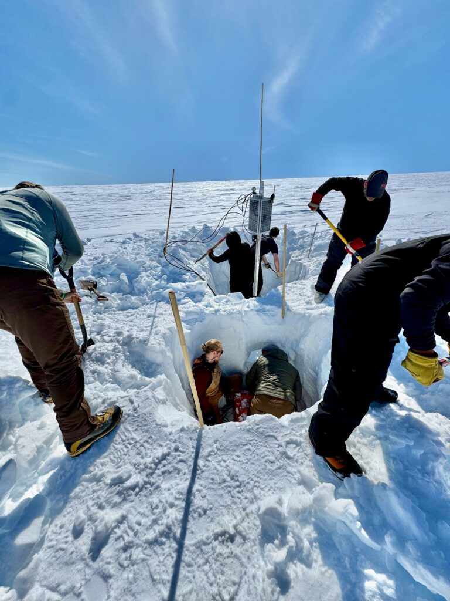
All hands on deck! Above, the team works quickly to dig out the Martin Peninsula seismic station (MRTP), accomplishing an impressive amount of work in a short period of time.
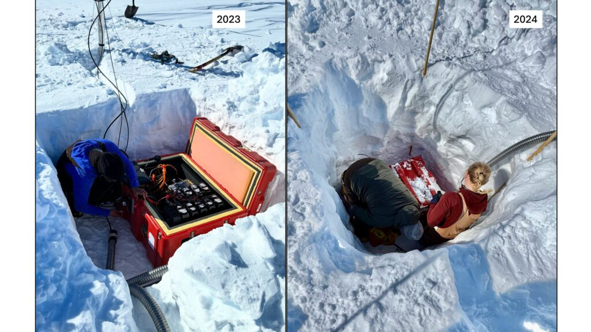
Above, the Martin Peninsula seismic station (MRTP) in 2023 (left) and 2024 (right).
Updates From the Field #6: RIP Upper Thwaites (UPTW)
13-14 December 2024, Upper Thwaites Glacier, West Antarctica
The ANET-POLENET network will be decommissioned over coming years, because project funding is ending. Due to weight limits for cargo on the aircraft and limited time on the ground to dig equipment out, the process of removing our sites will progress ‘as possible’. Upper Thwaites is a good example – over the course of 2 days, 2 flights, and much digging, the team retrieved the precious seismic data and removed and brought back an enclosure, batteries, and a solar panel. The remaining solar panel and sensor were left in place - it would require at least another 2 days to excavate this remaining equipment. Rest in peace UPTW seismic site!
Work at the Upper Thwaites GNSS/GPS site (UTHW) included repairing a broken connector and swapping the antenna. The team hopes to complete additional site visits in the coming days, before a weather system moves in.
Text sent from lead-PI Terry Wilson:
The good weather should last another day or two at the MRTP-Bear part of the coast, and maybe another day around Thurston Island. A monster storm system is advancing from off the Marie Byrd Land coast grid northward - the question is how fast it moves.
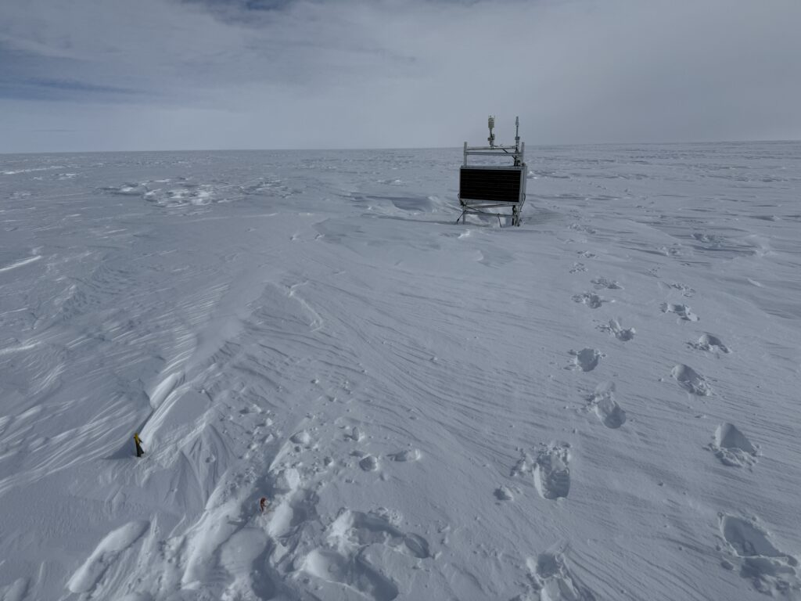
Above, the Upper Thwaites GNSS/GPS site (UTHW) is deeply buried in snow. Photo credit: Franco Sobrero.
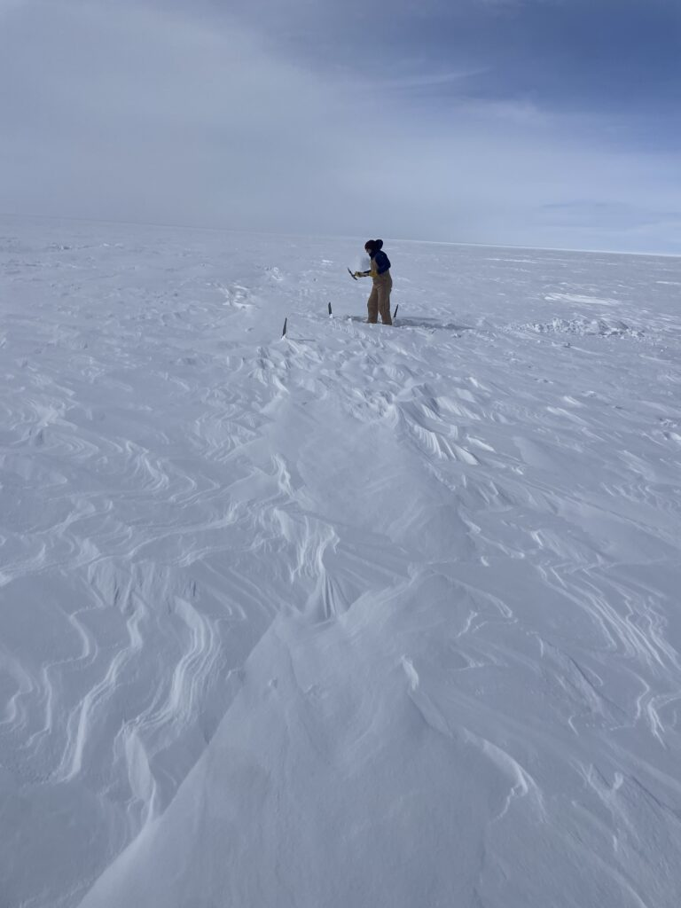
At sites with high snow accumulation rates, bamboo poles are inserted to help locate equipment in the event of a complete burial. Above, Erica Lucas stands near bamboo poles marking the location of buried equipment at the Upper Thwaites seismic site (UPTW). Photo credit: Jim Normandeau.
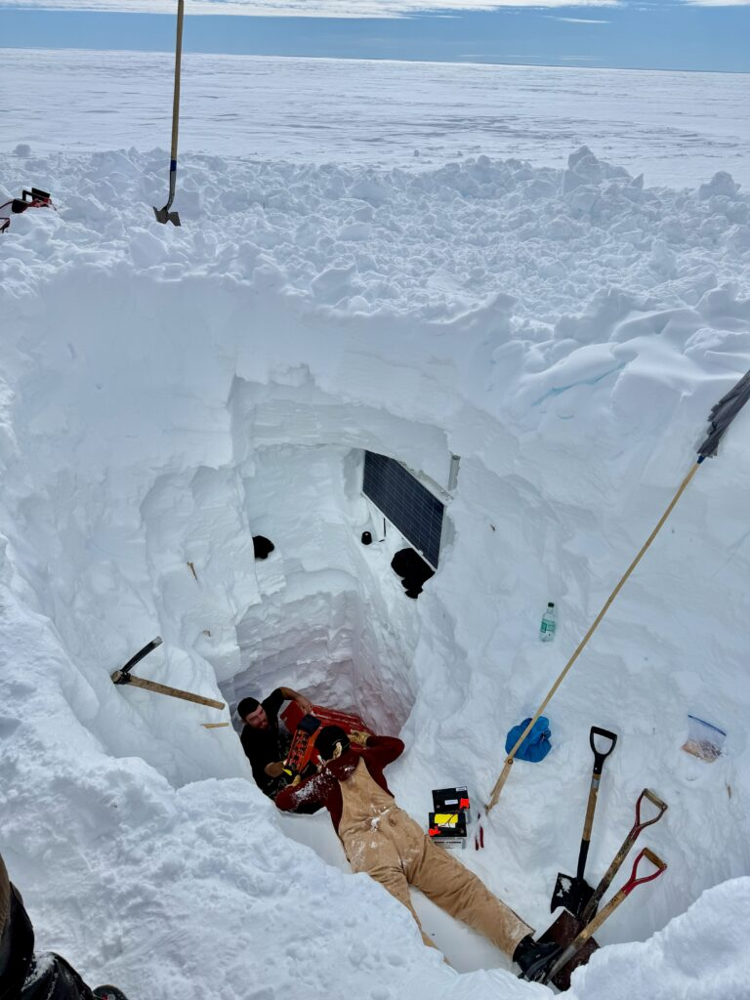
KBA mechanic Phil Polin and science team member Erica Lucas retrieve precious data from the Upper Thwaites seismic site (UPTW). Photo credit: Franco Sobrero.
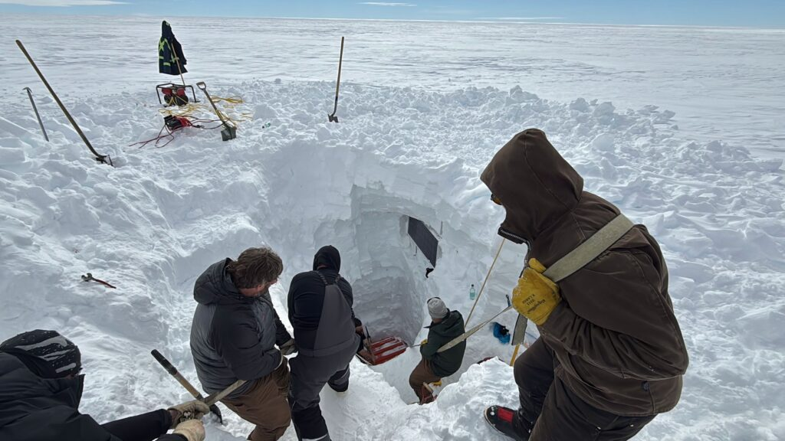
Above, the team works together to pull the deeply buried equipment enclosure from the Upper Thwaites seismic site (UPTW). Photo credit: Franco Sobrero.
Updates From the Field #5: First Flight
9-12 December 2024, West Antarctica
The first flights are underway! A cargo/reconnaissance mission as well as a maintenance visit were both completed this week.
On Monday 9 December a small crew flew to Miller Crag (MRCG) and Backer Island (BACK) to drop-off batteries, freeing up precious weight for future maintenance visits. This 'battery shuttle' flight not only successfully offloaded necessary batteries, but it also served the important purpose of assessing requirements for the site.
Text sent from lead-PI Terry Wilson:
Miller Crag just had high cloud, no problems. BUT the GPS main box was broken and snow was inside the box, plus the turbine was broken and dented. Now that we know this we can prepare to fix it . Rime ice over everything, including riser & antenna. We had to check weather multiple times before making the call to fly, so take off from Union was at 11:40am and they returned to Union at 12:10a.m. – long day!
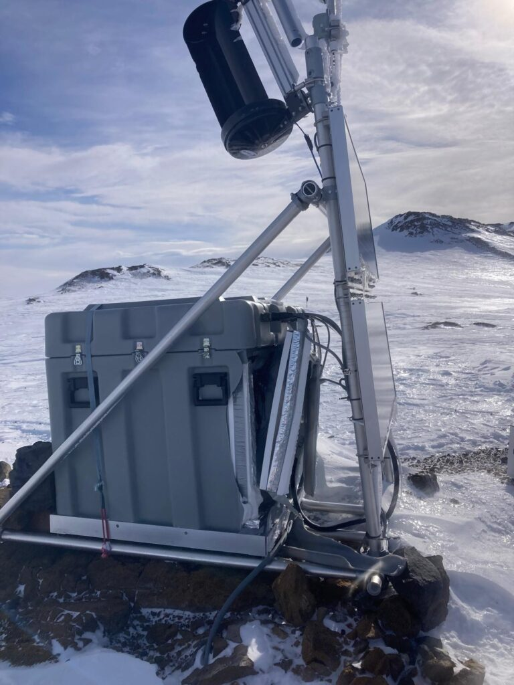
At site Miller Crag (MCRG) a broken GNSS/GPS enclosure and damaged wind turbine will need to be repaired during the future maintenance visit.
The GNSS/GPS mast and antenna at site Miller Crag (MCRG) covered in rime ice.
On Wednesday 11 December the team successfully serviced both the seismic and GNSS/GPS sites at Lepley Nunatak (LPLY). The team swapped in a new electronics board at the GNSS/GPS site to upload firmware, and made important repairs to the seismic site.
Text sent from lead-PI Terry Wilson:
We arrived at the site to flat light and blowing snow – it was anomalously warm, just below freezing, with high humidity so the snow stuck to everything and then melted. Erica & Jim had to work down in a pit to access the box and the drifting snow soaked them and caused erratic behavior in the laptop used to check the baler & Q330, slowing things down. Turned out that both the Q330 and the seismic GPS were ‘dead’, and so all those and cables had to be swapped. I made the command decision that we did not have time to raise the box to the surface or even think about raising the sensor, but we did raise the solar lampshade. It was slow going and not very pleasant. Plenty of digging, but not a huge dig . Took off from Union just after Noon , arrived at Lepley at 4 pm, departed at 7pm, arrived back at camp at 11pm. First full site done!
From left to right: Field team members Franco Sobrero, Mark Whetu, and Nicolas Bayou wrestle with an ice-covered GNSS/GPS site at Lepley Nunatak (LPLY).
Field team members Erica Lucas and Jim Normandeau access the seismic equipment enclosure at site Lepley Nunatak (LPLY).
On Thursday 12 December lead-pilot Troy McKerral with Kenn Borek Air (KBA) opts for a crew rest day due to dicey weather at the science sites and a worsening camp forecast.
Updates From the Field #4: Let the Games Begin
7 December 2024, Union Glacier Camp, West Antarctica
After setting up camp the previous day, no time is wasted getting started. Taking advantage of clear weather locally, the team completes field safety training and services a nearby seismic site.
Text sent from lead-PI Terry Wilson:
Although weather was not clear enough to fly to any sites, we were able to service the local seismic site at Union Glacier. The ALE field safety team had used ground penetrating radar to ensure that the route was safe for travel on snowmobiles towing sleds. The ALE team then accompanied us to the site. A simple swap of the ‘baler’, the data recording unit for our seismic sites, was accomplished quickly. Taking advantage of the sunny day, the field team completed training in roped glacier travel and crevasse rescue with our mountaineer, Mark Whetu.
Mountaineer Mark Whetu (front right) ropes up with science team member Jim Normandeau (back left) during crevasse rescue training.
From left to right: Franco Sobrero, Terry Wilson, Jim Normandeau, and Erica Lucas transport equipment to the Union Glacier (UNGL) seismic site.
Field team member Jim Normandeau services the Union Glacier (UNGL) seismic site.
From left to right: field team members Erica Lucas, Franco Sobrero, Terry Wilson, Nicolas Bayou, and Jim Normandeau pose at the Union Glacier (UNGL) seismic site.
Updates From the Field #3: Welcome to Antarctica!
5-6 December 2024, Union Glacier Camp, West Antarctica
The ANET-POLENET field team arrives at Union Glacier Camp, operated by ALE (Antarctic Logistics & Expeditions: https://antarctic-logistics.com/). Located in the Ellsworth Mountains, the ALE camp location makes it possible to reach the majority of ANET-POLENET field sites. Despite a relatively sleepless start, the team starts off strong by setting up camp for the field work ahead.
Text sent from lead-PI Terry Wilson:
We were fortunate this year that our science cargo arrived before us and ALE staff had already staged it in/near our ‘science tent’ where the team will work. Due to late arrival from Punta Arenas, the team did not get to bed to 5 a.m. In spite of lack of sleep, we made great progress in organizing our science tent and equipment tent and setting up initial instrument tests. Tuning our flight and cargo plans with our KBA pilot Troy Mckerral is helping to resolve some of the many challenges in getting our field team and equipment from Union Glacier to the very distant stations in coastal West Antarctica. ALE has successfully put in our 2 remote fuel caches using their Basler aircraft and also deployed all our heavy batteries at a cache, allowing us more cargo weight on flights to service sites that require battery replacement.
Meet the team! The full field team assembles at ALE Union Glacier Camp, West Antarctica. From left to right: science team members Jim Normandeau, Franco Sobrero, and Erica Lucas, KBA mechanic Philip Pilon, KBA co-pilot 'first officer' Griffin Kelly, ANET-POLENET lead-PI Terry Wilson, KBA pilot Troy McKerral, science team member Nicolas Bayou, and mountaineer Mark Whetu.
Updates From the Field #2: Food, Fellowship, and Juggling
4 December 2024, Punta Arenas Chile
ANET-POLENET field team members assemble in Chile before departing to West Antarctica for the 2024-2025 field season. Time in Chile is spent finalizing cargo and managing the many aspects of field work. The all-important task of assessing strategies for flight planning is much like a juggling act; equipment and passenger weights, distances to sites, fuel cache locations and availability, and crew duty day are all variables that must be kept in balance to maximize each flight opportunity. This planning starts long before the team ever sets foot on the ice and is an essential component of a successful field season. In-between the work, the team takes advantage of the opportunity for some well-deserved food and fellowship.
In keeping with tradition, the team visits the memorial to Ferdinand Magellan and 'rubs the toe' to ensure safe passage from Punta Arenas to Antarctica. Pictured above from left to right: Science team members Franco Sobrero, Terry Wilson, Erica Lucas, Jim Normandeau, Mark Whetu (mountaineer), and Nicolas Bayou assemble in front of the Ferdinand Magellan statue before departing for Antarctica.
Fueling productivity with coffee - lead-PI Terry Wilson documents some of her final coffee beverages enjoyed in Punta Arenas before departing for Antarctica.
The field team enjoys a meal in Chile before the start of the Antarctic field season. From left to right: ANET-POLENET lead-PI Terry Wilson, Erica Lucas, Jim Normandeau, Mark Whetu (mountaineer), Nicolas Bayou, and Franco Sobrero.
Updates From the Field #1: ALE and KBA - always awesome!
12 November 2024, West Antarctica
The ANET-POLENET team will again work out of Union Glacier Camp, operated by ALE (Antarctic Logistics & Expeditions: https://antarctic-logistics.com/). Weeks before the field team's anticipated arrival, ALE is already hard at work with Kenn Borek Air (KBA) caching fuel for the project. Exceeding expectations every year, ALE and Kenn Borek Air (KBA) continue to impress. They embody the concept of supporting science!
Texts sent to lead-PI Terry Wilson from Tim Hewette, field operations manager for ALE:
Hey Terry,
I am pleased to announce that we have begun the fuel cache missions for the Polenet project. Cpt Cameron in Basler GSU opted to find his own site near "WSD" without requirement for the Twin Otter to prove it first. Weather permitting, my intent is to place fuel in both cache locations, such that Polenet is not delayed waiting for fuel to be delivered once you arrive. I will refrain from dropping the final loads if the batteries are not onsite yet.
Sound good?
"2024 Polenet #2 Fuel Cache" Location: S77 42.22 W107 49.58
As of tonight, you have 45 drums on site @ Cache 2 💪🏽
Kenn Borek Air (KBA) plane and crew member with cached fuel drums. Photo credit: KBA